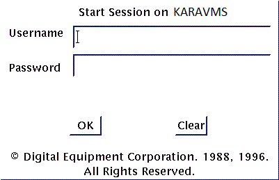

OpenVMS DCL Fortran Free
A beginner’s guide to the OpenVMS operating system and its command language, DCL
Version 2.0 © Kara Ottewell 1996-2026
This tutorial is aimed at users who are completely new to VMS, and haven’t encountered multi-user computer systems before. It is based on a document I wrote to help new users when I worked at Manchester University, which I later adapted for my colleagues at Yezerski Roper Ltd., and whilst I have tried to weed out site-specific references, some may have slipped through the net. It was converted from a TeX document, so if you spot any \commands you can reminisce back to the old days of WYSINWYG. You may notice a few age-related creaks, like the emphasis on Fortran, but VMS is famously good at running programs written decades ago, and the commands described here still work on the newest systems.
Just to answer a few FAQs (Frequently Asked Questions) right up front:
Having followed the examples in this guide you should be able to start using VMS productively, and know enough to decide which FM to R (as in RTFM, or Read The Flipping Manual). However, it is essential to actually try the examples, and attempt the exercises (solutions at the end) in order to get a firm grasp of the basics.
The exercises use a few small example files: Fortran programs, a command file and an editor startup file. On the system I wrote this for they lived in SYS$EXAMPLES:, but you won’t find them on yours, so you can download them all as KarasVMSTutorial.zip. A detached PGP signature file (you do not need to download the latter unless you know what it’s for) is provided so you can be sure the archive has not been altered. Copy the zip file to your VMS account (with sftp, described in §9.3), then unpack it with unzip -a KarasVMSTutorial.zip so that the text files get the correct file attributes. The files are short, so you could equally well create each one with an editor and paste in its listing from this page.
You can also try the Fortran programs on a Windows PC. The Intel Fortran Compiler, which works with Microsoft Visual Studio 2022 and 2026, can be downloaded and used free of charge for non-commercial use. The zip includes a Visual Studio solution, KarasVMSTutorial.slnx, with a console application project for each program: tut, sdeb, and libtest1, which builds LIBTEST1.FOR and LIBTEST2.FOR together, rather than through an object library as in §12. Open the solution in Visual Studio 2026 (or a recent update of 2022) and build it, then to run a program, right-click its project, choose “Set as Startup Project”, and press Ctrl+F5, so that the console window stays open when the program reaches STOP. In sdeb, dividing by zero gives the answer Infinity, as it does on Integrity and x86-64 VMS, unless you set the project’s Fortran, Floating Point, “Floating Point Exception Handling” property to /fpe:0. DCL, EVE, EDT and the VMS debugger still need a VMS system, of course. (On VMS, unzip -a unpacks the solution and project files too, but VMS simply ignores them.)
This document describes VMS V6.2 onwards, on VAX, Alpha, Integrity (Itanium) and x86-64 systems, making the few differences in behaviour clear as it goes along. I have described logging in to “dumb terminals” and to workstations, though the workstation is assumed to be using the “DECwindows Session” style screen rather than the “New Desktop” CDE interface.
Yezerski Roper Ltd. employed a whole bunch of clever, talented people who could do just about anything with VMS and Windows. Sadly they are no more, and like Merlin, have disappeared into the Pennine Hills until such time as the land is in time of peril, and needs their magic again.
Most of this tutorial was written in the 1990s, when a VMS system meant a room full of VAXes and Alphas, with terminals on every desk. VMS itself has changed remarkably little since then, which is rather the point of it, but the world around it has. The main changes are listed here so that the older parts of the text make sense, and I have corrected the places where they mattered.
EDIT command on its own runs EVE, the OpenVMS default editor, rather than the older EDT. The original text assumed EDT, so §8 now describes both.The best way to learn VMS is to use it. If you don’t have an account on a VMS system at work, VSI’s Community License lets you run OpenVMS free of charge for learning, open source development and sharing knowledge of the system. It replaced the old HP hobbyist programme, which ended in 2020. Today the easiest route is to run the x86-64 version in a virtual machine on your PC, under VirtualBox, VMware or KVM, so you no longer need to hunt for a second-hand VAX or Alpha, though some people still do, for the fun of it. Emulators such as SIMH will even pretend to be a VAX for you.
I shall use Ctrl for the CONTROL (or similar) key on the keyboard. It must be held down together with the additional character specified, so Ctrl+A means: hold down Ctrl and keep it held down whilst you press and release the letter A. For carriage return I shall use Return, though on a PC keyboard the key is called Enter, and in the terminal sessions below it isn’t shown at all: every line you type ends with Return. [...] means that the part in brackets is optional, and may be missed off. Things typed in by the user in response to system prompts are shown in bold letters LIKE THIS after the $ system prompt (which the computer sends to the screen). For example,
$ DIR
means that after the $ prompt appears on the terminal, the user enters the letters D, I and R then presses the Return key.
Since this tutorial is aimed at newbies, I’m going to talk about hardware and software. More experienced users should nip off for a coffee break and come back in a few minutes. The hardware is the actual electronics and physical devices like printers, disk drives, memory and so forth which make up the computer system you are using. The software is the set of programs, or instructions, which are executed or run by the computer hardware.
A typical VMS cluster system will consist of several VMS computers which communicate with each other over a network to form a VMScluster. Whichever machine you log in to within the VMScluster, you will be left in your own personal file directory (directory in VMS-speak == folder in PC speak), and the software environment will be almost identical. In other words, on the whole, your files, commands and devices will look the same whichever member of the cluster you log in to. A list of the VMScluster machines can be obtained by entering the SHOW CLUSTER command.
In a development environment, system software would be likely to include:
This is important :-) You won’t get far at all until you log in, which makes you known to the system as an authorized user. I’m assuming here that you have seen your system manager, that he or she has issued you with a valid username and password combination, and warned you not to reveal this information to anyone. Guard it like you would your credit card and PIN number !
These days you will almost always log in over the network, using SSH (Secure Shell), which encrypts everything you type, your password included. Windows has an SSH client built in, which you can use from a Command Prompt, PowerShell or Windows Terminal window, giving your VMS username and the name of the VMS system, like this:
C:\Users\Fred> ssh fred@bigvax.example.com fred@bigvax.example.com's password:
Another good choice is the free PuTTY terminal emulator, which emulates a VT terminal well, including the keypad that the VMS editors use. Type the system’s name in the Host Name box, choose SSH, and click Open. Either way, you will be asked for your password, and once you are in, everything else in this tutorial works exactly as if you were sitting at a terminal in the computer room. The first time you connect to a system, SSH asks you to confirm that its “host key” is the one you expect; ask your system manager if you are not sure.
In the days of “dumb terminals” like the VT420, a terminal would typically be connected to a terminal server. This is a box which allows your terminal to connect to any of the local computers, rather like a local telephone switchboard. Ideally, you should use a DEC VT type terminal, eg. a VT220, VT420, VT520 or compatible, which will make it much easier to use certain facilities on VMS.
First get the attention of the terminal server by pressing the Break key followed by a number of Returns until you get the prompt Local>, to which you should reply CONNECT name_of_machine.
Break (hold for about a second) Return Return Local> CONNECT YR1
If you do not get the Local> prompt after pressing Return a few times, hold the Break key for another second and press Return a few more times until you are successful.
At this point, a welcome message of some sort should appear and you can proceed as if your terminal was directly connected, as described below, except that you should miss out the Break Return step, because the Username: prompt will already be there for you.
If the terminal you are using is directly connected to the VMS machine, rather than to a terminal server, then you will get a brief site-specific welcome message (probably accompanied by dire threats about unauthorized access) followed by the Username: prompt after your first Break Return.
*** BigCorp VMS Cluster ***
Node TINY, a VAXstation 4000-VLC on VMS V7.2 - No Unauthorized Access
Username: FRED
Password: (enter your password here - you won’t be able to see it)
If you enter a valid username and password, you will be allowed in, and probably get further welcome messages before seeing the “command prompt”, which is usually a $ sign, but can be customized. If you enter a bad username or password, you won’t be told which one is wrong (for security reasons) but you will see a message similar to this.
User authorization failure
Just try again if you see that, but be aware that if you have more than three or four failures in a row you may need to see the system manager, because VMS might suspect that you are an intruder!
If you are using a VMS workstation you should see a login box, similar to the one below, inviting you to enter your username and password. If you can’t see such a box, check that the workstation base unit and the monitor are switched on (being careful not to switch them off in the process of looking), and try moving the mouse to wake up the screensaver, which may have cut in to blank the screen during idle periods. If you still can’t see the login box, get help before proceeding any further. Once you have the login box, enter your username and password as described below.

Type in your username in the Username: box (workstation) or after the Username: prompt (terminal). Press the Return key after entering your username. The terminal should then prompt for your password, and the workstation will move the flashing input cursor down to the password box. Type in your password. You will notice that your password is not displayed on the screen, even though the computer is receiving the letters that you are typing. This is a security feature to prevent other people obtaining your password by looking over your shoulder. I will say more about choosing passwords later.
Username SHADRACK
Password BILLYLIAR (not echoed)
Alpha machines may use the CDE, or Common Desktop Environment, rather than the older style DECwindows one, so the login screen will look slightly different, but the username and password are entered in much the same way. The CDE environment is fairly different though, so have a look at its user’s guide in the documentation. Once you have a DECterm up though, the commands in this tutorial all work exactly the same as they do in the older environment.
The session proper will then start. If you have correctly entered everything, you will receive certain messages about the system as logging in proceeds, and the system manager will most likely have provided you with a personal login file, called LOGIN.COM. Your LOGIN.COM file is executed automatically by the system whenever you log in. The computer will most likely give you a welcome message identifying itself (take note of these details in case you have to ask for help), and possibly tell you who else is currently logged in to the same computer. When login is complete, a text terminal will display a “command prompt” something like this
$
If the system manager has set the prompt to be the machine name you might see something like
BIGVAX>
or
ALPHA1$
Ask your system manager what the DCL prompt should be for your system.
If you are using a workstation, then you will need to bring up a DECterm (a program on the workstation that emulates, or looks a bit like, a terminal). If you don’t see one, then bring up the “Session Manager” box by double-clicking on the Session Manager icon, which has a Yale-type key on it. When you’ve got the Session Manager, click on the “Applications” menu to bring that up, then click on “DECterm”. After a few seconds, this will bring up a DECterm “terminal” and if you click on the face of it, you will be able to enter commands just like you would on a physical terminal.
When you see the correct prompt, it means that DCL, Digital Command Language, the VMS command line interpreter, is ready to accept commands from you. As I’ve said already, the DCL prompt will generally be the $ dollar sign, or the node name (the name by which the computer is known to the network) followed by a dollar or > sign.
Important: You may log in more than once under the same username. On a busy shared system you wouldn’t normally do this for long, since every extra session uses up resources, but it is useful if, for example, you want to STOP a program that is stuck in an infinite loop. Over SSH you simply open another terminal window. On a workstation you would generally create several DECterms from the Session Manager’s Applications menu, and switch between them by either clicking on the DECterm you want, or using Alt+Tab (that is, pressing and releasing the Tab key whilst holding down the “Alt Function” key next to the space bar) to cycle round the windows on your “desktop”. The term “desktop” here refers to your computer monitor’s screen, not your actual desktop :-)
Now you’ve logged in, you’re probably exhausted with excitement, and want to log out again and have a lie down before continuing. How do you log out ? To log out on a text terminal, or to end an SSH session, enter
$ LOGOUT
or simply
$ LO
(LOGOFF does the same thing.) If you are on a workstation and you type this command into one of your DECterms, then that particular DECterm will disappear, but you will still be “logged in to the desktop” as it were. To completely log out of the workstation, bring up the Session Manager (remember, double-click on the key icon if you can’t see it), then choose the “Session” menu. Click on “End Session”. A box will pop up to confirm that you really do want to end the session (because you might lose work if you ended it accidentally), so click on the “Yes” button to completely log out of the workstation. On the CDE desktop, the little “Exit” button on the icon bar does the same thing.
Security warning: never leave your terminal unattended whilst you are logged in, even if it is only for five minutes. Always log out if you are not actually using the computer.
The first time you ever log in you will be forced to change your password, and your system manager may make you change it again every so often. Choose a password that would not be easy for someone else to guess. Length matters more than cleverness, so a passphrase of several unrelated words is both stronger and easier to remember than a short word with a digit stuck on the end. Do NOT use your own or your girl/boyfriend/wife/husband/dog’s name, or anything to do with your home address, or any of these reversed, and don’t use the same password on any other computer or web site. To change your password whenever you like, enter
$ SET PASSWORD
and follow the prompts. Type HELP SET PASSWORD before you try the command, and this will explain exactly what to do.
VAX, Alpha, Integrity and x86-64 machines can all run an operating system called VMS. Other operating systems that you may have heard of include Windows and Linux. The operating system can be thought of as a special collection of programs which run on the machines all the time, providing a more user-friendly way to communicate with the computer. For example, if you want to save your program as a file on the computer’s disks, you just specify the file name – you let the operating system worry about where, physically, to put the data on the disk. Similarly, when you retrieve a file, VMS knows where to find it given only the file specification.
Another job done “behind the scenes” by VMS is switching between different “tasks” or “processes”. Each Central Processing Unit (CPU – the chip that carries out the instructions in a program) can actually only do one task at a time. So how come that several people can be “logged in”, things can be printing out and several programs can all apparently be running simultaneously, even on a machine with only one CPU ? The answer is that the VMS operating system is running the tasks in sequence, spending a short period of time on each one, then moving on to the next, and so on through all the tasks that are “runnable”, then back round to the original task, and so on. It does this so fast that each task gives the illusion of continuously running. It’s a bit like a plate spinner running from plate to plate, giving each stick a shake to keep the plate going, continuously checking all the plates to see which ones need a spin next. The difference is that VMS processes, although they do occasionally fall over, rarely fall out of the machine and make a mess on the floor ;-|
The amount of time each process gets relative to the others depends, among other things, on the priority of the process. You can see what your priority is by entering
$ SHOW PROCESS/ALL
which gives information about your process (you may have to use Ctrl+S and Ctrl+Q, described in §5.1, to stop the information scrolling off the screen). The normal priority for interactive users is 4, certain system tasks have higher priority, and batch jobs usually run at a lower priority so that they use up spare CPU time with very little inconvenience to interactive users. You can lower the priority of your own process, and put it back up again, but not above the base priority your account was given, unless you have a special privilege. VMS also manages the batch job queues, allows the different machines in the cluster to talk to each other, and many other tasks of this nature. How do you talk to VMS ?
We tell VMS what to do using an English-like command language, called DCL. Normally you enter VMS commands (in the DCL language) at your terminal and wait for each one to finish, but you can also put commands in a file and submit it as a batch job (§13). If you start a program, or a system task, you have to wait for its execution to finish. However, it is possible to interrupt a running program, execute something else, and then continue the previous one (see the SPAWN command under Miscellaneous). The output will normally appear at the terminal. A list of all DCL commands can be found in the DCL Dictionary (A–M and N–Z).
The system prompts with a $ or a “node_name>” (eg. YRL>) sign when it is ready for the next command. You can type ahead, but the text will not appear at the terminal before VMS catches up.
One of the nice features of VMS is the HELP facility, which in many cases saves you having to consult the manual. In DCL, and most of the utility programs (see later), you can type HELP and will be presented with a list of further topics, like DCL commands. You can specify the command you want to know more about at the command line, thus:
$ HELP DIRECTORY
HELP HINTS is probably a good start for the beginner, because it categorizes commands and features, e.g. Contacting_people. In VMS, go for the most obvious command when looking up help. For example, if you want to know how to delete a file, HELP DELETE is the thing to type. VMS doesn’t go for obscure names, like some Unix systems do. You are encouraged to make heavy use of the HELP facility.
Help tip: when inside HELP, it will ask you for Topic?, Subtopic? or the like. To get out again, press Return for each level, or Ctrl+Z to leave HELP altogether. Feel free to experiment and explore the system using the HELP command.
On a real VT terminal, the key which deletes the character immediately to the left of the cursor (flashing block or line) is the one marked <X], the Delete key, not Backspace or ←. Terminal emulators such as PuTTY send the same code when you press Backspace, so on a PC Backspace works as you would expect. To delete a complete line before you have pressed Return, use Ctrl+U, which deletes ALL the characters on the line to the left of the cursor position. Ctrl+H moves the cursor to the start of the line, and Ctrl+E to the end.
Another useful line editing feature is Ctrl+A, which toggles the line between overstrike mode and insert mode. Overstrike is the default, but if you prefer to start in insert mode, put SET TERMINAL/INSERT in your LOGIN.COM. For example, you are trying to type in
$ SET DEF SYS$LOGIN
but instead you type
$ SET DF SYS$LOGIN
so to correct the line, BEFORE you press Return press the ← key until the cursor is over the “F” in “DF”, press Ctrl+A and then the letter “E” – the letters to the right of the cursor all move one space to the right to fit the “E” in. You can then press Return and your default directory will be set to your login directory.
To skip through output to your screen (while the program continues running !), type Ctrl+O. To see the output again do another Ctrl+O (but you will lose the output that has been produced in the meantime).
If you want to stop the output scrolling past, in order to read it at leisure, type Ctrl+S, which will suspend the program output until you type Ctrl+Q to continue. Attention: after Ctrl+S, nothing you type will appear on the screen until you press Ctrl+Q! On terminals where the Hold Screen key exists, it can be used to toggle between the two, in the same way as Ctrl+S and Ctrl+Q.
To stop a program, use Ctrl+C or Ctrl+Y. Ctrl+C is the gentler of the two: programs and utilities that know about it, such as MAIL, stop what they are doing and tidy up, and in a program that doesn’t, it has the same effect as Ctrl+Y. Ctrl+Y interrupts the current program at once and returns you to the DCL prompt, but the program is only suspended: when you type CONTINUE directly afterwards, it carries on where it left off. Running another program, or typing EXIT, then ends the interrupted one (see, however, SPAWN in §15).
DCL commands are the main way you will communicate with the VMS operating system. You must be “at the DCL command prompt”, normally the $ sign, to enter a DCL command. Here are a few commonly used commands.
$ SHOW TIME $ SET DEFAULT SYS$LOGIN: $ SHOW DEFAULT $ DIRECTORY $ HELP SHOW $ HELP SET
The SET and SHOW commands have many options and are widely used. As their names suggest, SHOW is a “read only” type of command that displays something, whereas SET is used to change something, provided you have the privilege to do so, e.g. only privileged users can change the system time. As stated earlier, HELP will have information on all the built-in VMS commands, and you should get used to consulting the HELP system to find your way around.
DCL commands need not normally be spelled out entirely, any unambiguous abbreviation is allowed, so FOR will suffice for FORTRAN, R instead of RUN, and so on. However, if you type L hoping to LINK, you’ll see the message
%DCL-W-ABVERB, ambiguous command verb - supply more characters \L\
When writing command files, however, it is good practice to always use the full form of the commands. This will save many problems later on !
Some people regard it as an intellectual challenge to log in to a computer system which they are not authorized to use. These hackers can do a lot of damage to the system software, and may delete or corrupt all the users’ files. If this happens it can take the system manager a long time to restore the system and the user files, and even then some work may be lost, so it is very important to heed some basic principles of system security.
Choose your password carefully, taking note of the guidelines given earlier. When you log in, messages report the time of your last interactive login, when your last batch job logged in, and whether there have been any unsuccessful attempts to log in to your account. If any of these look odd, like logins when you were definitely not there, or several unsuccessful login attempts which weren’t due to you mistyping your password, then change your password and contact the system manager immediately, in person if possible. Similarly if you suspect some of your files have been changed or deleted without your knowledge, or if you see a strange batch job or unfamiliar username logged in, inform the system manager as soon as possible.
It might be that there are perfectly innocent explanations – don’t worry if this turns out to be the case – the system manager will not mind so long as you had genuine concern for security.
Another important thing to remember is NEVER put your password in a file on the VMS system, no matter how well you think it is protected, eg. never mention it in a MAIL message or a command file. This applies to passwords for other machines too. If you must write down your password on paper, do not write it in a form that is recognisable as a VMS password. Finally, under no circumstances should you reveal your password to anyone, and that includes the system support people, who never need it: the system manager can always set you a new one. Remember that hackers often pose as system support people or field engineers, so make sure that you know who you are really speaking to.
Finally, do not allow anyone else to use your account. The account has been created for your use and your use only. Anyone requiring the use of the VMScluster should come and see the system manager, who will decide if they have a reasonable case. Unauthorized use of your account could deprive legitimate users of resources and slow them down, and your password could end up known to anyone, creating a potentially disastrous security breach for which you could be responsible. Anyone allowing such use of their account, or attempting unauthorized actions on files belonging to the system or other users, may have their account removed.
Following these guidelines will safeguard legitimate users, and benefit all of us in the long run.
A VMS file specification consists of three parts:
PDS$DISK:[USER], or [USER.TEX]name.type;versionwhere, on a classic ODS-2 disk, name is a string of up to 39 letters, digits, underscores, hyphens and dollar signs, type is the file type (up to 39 characters, counting the dot), and version is the version number between 1 and 32767, e.g.
PROG.EXE;17, or TEST.TXT.1
(a dot works as well as a semicolon in front of the version number). On ODS-5 disks the rules are much more relaxed, as described in §1.1. The device and directory part are known as the pathname, and may be prefixed by nodename:: if they are on a different computer. It is very important to understand this scheme correctly, so read the following carefully.
Each user has defaults for the device name, and the directory. You may find out your current defaults by typing
$ SHOW DEFAULT
This shows you the device and directory which VMS will assume if you specify a file name only. You may change the default, separately for the device name and the directory, using
$ SET DEFAULT new_default
If you enter a file name in any command without items 1 and 2, e.g. simply TEST.TXT, the system will precede the name by the default internally, and take the highest version number of the file.
The physical devices are disks (or other devices, like tapes, not treated here), where the different files reside. The user need not normally know the names of these devices. Instead, he or she should always use logical names, like SYS$LOGIN, SYS$SCRATCH, or DEV$DISK (which is the sort of name a system manager might define for a user disk), and which are accepted equally well in all file name specifications. The system may, however, prompt with the physical name. The advantage of using the logical names for devices is that if the device should be changed for any reason, the system manager will alter the logical name and the change will not affect those users sensible enough to use that logical name.
Any logical names which you DEFINE (or ASSIGN) are placed in a separate name table for your process only. These will disappear once you log out, so frequently used logical names should be defined in your LOGIN.COM command file, adding a line of the form
$ DEFINE/NOLOG MONTE_DIR DEV$DISK:[HORACE.MCARLO]
for example. Files in the DEV$DISK:[HORACE.MCARLO] directory could then be referred to as MONTE_DIR:filename.type;version. This is shorter, and has the advantage that if you move your files for any reason, you need only change one logical name and everything will work in the new directory. Note that DEFINE takes the logical name first, whereas the older ASSIGN command takes them the other way round, so ASSIGN DEV$DISK:[HORACE.MCARLO] MONTE_DIR does the same thing. Also note the underscore: names containing a dollar sign are reserved for the operating system and VSI’s products, so make up your own names without one.
The system logical names, for disks etc., are placed in the system logical name table which is created when the system is booted. These remain defined permanently.
To see what logical names are defined for you enter
$ SHOW LOGICAL
(no surprises there !) or
$ SHOW LOGICAL SY*
to see only the logical names beginning with the letters “SY”, for example.
The system supports certain default file types – the complete list can be found in the OpenVMS User’s Manual. Below is a list of common file types you should know:
| Type | Default for | Contents |
|---|---|---|
| COM | DCL | DCL command file (like a Unix shell script, or a Windows .cmd file) |
| EXE | VMS | Executable program image |
| C | C compiler | C source |
| CXX | C++ compiler | C++ source |
| FOR | Fortran compiler | Fortran source |
| MAR | MACRO-32 | VAX MACRO assembler source |
| DAT | Many things | Data file, e.g. program input/output |
| LIS | Compilers etc. | Informational listing (e.g. compiler output) |
| LOG | VMS batch jobs | Batch job output log file |
| MAP | LINKer | Map created by the linker |
| OBJ | LINKer | Object file (= relocatable binary) |
| OLB | LIBRARY Librarian | Object library |
| TXT | Many things | Plain text, such as a mail message |
| PS | TeX, DECwrite etc. | PostScript laser printer commands |
| TEX | TeX | Text to be processed by TeX |
| DVI | TeX | Device-independent output from TeX |
It is highly recommended that you use these defaults to avoid confusion.
The system expects certain default file types as input and output files for system tasks and user programs. These types are automatically appended to the file name if not specified. Therefore the answer is: standardization, and less typing.
The Fortran compiler expects file type FOR on input, and puts its output in a file of type LIS (listing), and a file of type OBJ (object module). Suppose your source is in the file TUT.FOR;1 (being the highest version number of that file). Then the command
$ FORTRAN/LIST TUT
which is equivalent to
$ FORTRAN/LIST=TUT.LIS/OBJECT=TUT.OBJ TUT.FOR
will compile file TUT.FOR, create a listing in file TUT.LIS, and the compiled output in file TUT.OBJ. Similarly, the linker will use a file of type OBJ as input, and produce an output file of type EXE, whereas the command RUN will expect a file type EXE as input.
Therefore, to compile and execute the above program, you type
$ FORTRAN TUT $ LINK TUT $ RUN TUT
and off you go. If you do not happen to have a Fortran program of that name, use TUT.FOR from the examples zip, which looks like this:
C---- TUT.FOR - a first program to compile, link and run ----
PROGRAM TUT
C Print a short table of numbers, their squares and square roots
INTEGER I
REAL ROOT
WRITE(6,1000)
DO 10 I = 1, 5
ROOT = SQRT(REAL(I))
WRITE(6,1001) I, I*I, ROOT
10 CONTINUE
STOP
1000 FORMAT(' Number Square Square root')
1001 FORMAT(1X,I6,I8,F13.4)
END
and prints
Number Square Square root
1 1 1.0000
2 4 1.4142
3 9 1.7321
4 16 2.0000
5 25 2.2361
In order to assign a file name to a Fortran logical unit, use
$ DEFINE logical_unit filename
as in the following example
$ DEFINE FOR015 DEV$DISK:[BOB]POSFILE.DAT
where FORnnn is the “external” logical unit name for a program using unit nnn. To check which Fortran units have been assigned you can enter
$ SHOW LOGICAL FOR*
A program can of course name its files itself, with the Fortran OPEN statement, but defining the logical units in a command file which runs the program makes it easy to run the same program on different files without changing it.
If you omit a specific assignment, the running Fortran program will get default file names assigned, which are FORnnn.DAT for each unit nnn. At Manchester we had a local convention of using odd unit numbers for input and even ones for output, and it is a good idea to send error messages to a unit of their own, assigned to an error log file, for example
$ DEFINE FOR003 INDATA.DAT $ DEFINE FOR006 RESULTS.LIS $ DEFINE FOR008 ERRORS.LIS
then your Fortran program might be of the form
.
READ(3,'(6F10.4)',END=999) (ARRAY(I),I=1,6)
.
.
999 WRITE(8,1001) IERR
1001 FORMAT(1X,'End of file detected on unit 3, Error Number:',I4)
which would separate error messages from your program output.
In general, it is useful to look at all your files now and then, using the command
$ DIR
You can delete a file by typing (after having run the above example)
$ DELETE TUT.EXE;1
The ; is always necessary, but the version number may be left off if you mean the highest version number, so DELETE TUT.EXE; deletes the newest one. Add the /LOG qualifier and DELETE will tell you which files it deleted, or /CONFIRM and it will ask about each one first. Many people define a DELETE symbol in their LOGIN.COM to do one or both by default (symbols are described in §11.2).
A useful command is PURGE, e.g.
$ PURGE TUT.OBJ
(without a version number or ;) which will delete all versions of TUT.OBJ except the highest. A qualifier allows you to specify how many versions to keep, counting from the top, e.g.
$ PURGE/KEEP=3 name.type
will keep the three highest version numbers of the file specified. The system manager may occasionally purge everyone’s files after a suitable warning, so early versions of files which you actually want to keep should be renamed with a different name and/or file type, eg.
$ RENAME VITALFILE.FOR;2 VITALFILE.BAK
Another nice concept is that of asterisks “*” and percent signs “%” in file names, where an asterisk stands for “any string of characters, including none” and a “%” for “any single character”. These are called wildcards.
$ PURGE *.*
or just
$ PURGE
will delete all but the highest version number of all your files in the current directory (it is good practice to do this from time to time).
The command
$ DIR *.COM
will list all your files of file type COM, and
$ DIR MY*.%%A
will list all your files starting with “MY” and having a file type of three characters, the last one being “A”.
The asterisk does not match the dots between directory names, so to check all of your sub-directories (enter HELP CREATE/DIRECTORY to find out how to create sub-directories) you type
$ DIR [...]
which lists all of the files in your current directory and ALL the subdirectories below it (the number of full stops, three, is significant).
As you may have guessed by now, VMS doesn’t overwrite a file when you change it, but creates a higher version instead. This makes the PURGE command so necessary if you are to avoid using up all of your disk space allocation, or “disk quota”.
VMS comes with two full-screen editors, EVE and EDT. Both work best on a VT-compatible terminal or emulator with a numeric keypad, since many of their functions are on the keypad keys. If you are using PuTTY on a laptop with no keypad, both editors also accept typed commands, as described below.
EVE, the Extensible Versatile Editor, is the OpenVMS default editor, so to edit a file just type
$ EDIT filespec
EVE is written in TPU, the DEC Text Processing Utility, which is actually a language for writing text processing applications, so you will also see it started with EDIT/TPU, which does the same thing. You can type straight into the file, and move around with the arrow keys. To give EVE a command, press the Do key of a VT keyboard (a terminal emulator’s documentation will tell you which PC key sends it), then type a command such as HELP, FIND, REPLACE or EXIT at the Command: prompt. Ctrl+Z saves the file and leaves EVE, and the QUIT command leaves without saving.
If you are used to EDT, the EVE command SET KEYPAD EDT makes EVE emulate EDT’s keypad in many respects, while still allowing you to define and compile additional procedures using TPU. The important differences between “real” EDT and the TPU EDT keypad emulator are
The older EDT editor is still supplied with VMS, and many old hands, myself included, still have its keypad layout wired into their fingers. To enter EDT, type
$ EDIT/EDT filespec
If you only get a * prompt (the command mode), type CHANGE to get the first page of text on the screen. To finish your edit type Ctrl+Z, which will get you back to the * prompt. Type EXIT to save the file, or QUIT to leave EDT without saving the file.
EDT is most useful if your terminal has a keypad, which gives you dozens of functions like “delete word”, “cut” and “paste”. Single corrections are particularly easy in full-screen mode, but for global changes it is more convenient to issue line-mode commands at the * prompt. Type HELP in EDT for more details, or press PF2 in full-screen mode to see a diagram of the keypad.
It is possible to have certain line-mode commands executed automatically every time you enter the EDT editor. EDTINI.EDT in the examples zip is a one-line file of “editor startup” commands, containing the EDT command SET MODE CHANGE, which puts you straight into full-screen mode. Copy it to your login directory, then in the interactive part of your LOGIN.COM put the line
$ ED*T :== EDIT/EDT/COMMAND=SYS$LOGIN:EDTINI.EDT
then re-execute your login file by entering
$ SET DEFAULT SYS$LOGIN: $ @LOGIN
If you now enter the editor with EDT filename (or ED filename) it will automatically put you into full-screen mode. The asterisk in the symbol name means that any abbreviation from ED up to EDT will do, as explained in §11.2.
Enter a small Fortran program with EVE or EDT, save it with the correct default file type, compile it with a listing, link and run it. The program should print some output, which will appear on the screen.
To print a file on the default printer enter
$ PRINT filename
from VMS. The command
$ TYPE filename
will actually output the file to the screen, it being a hangover from the days of teletype terminals, which really did type it out on paper !
Most sites have more than one printer, each with its own print queue. To print on a particular one, name its queue:
$ PRINT/QUEUE=LASER filespec
Ask your system manager what the queues are called on your system, or see them all with SHOW QUEUE. You can check on the status of your print jobs using the command
$ SHOW QUEUE/ALL queue_name
where queue_name is the name of the print queue, such as SYS$PRINT for the default printer. Do not attempt to change the paper on the printers unless you know what you are doing, and always leave other people’s output in a tidy state in the printer basket after collecting your own.
When VMS machines are clustered, transfer is trivial. Certain disks on the different machines are available to all members of the cluster, and they have names of the form node_name$disk, eg. YR9$DKA300, YRL$DKA100, YRE$DKA400. You can see which disks are available using the SHOW DEVICE D command. To copy a file from user MORRISSEY’s directory on DEV$DISK to user MARR’s directory on PDS$DISK without changing the filename you would enter
$ COPY DEV$DISK:[MORRISSEY]TCM.TEX PDS$DISK:[MARR]
There is usually no need for this sort of transfer, since you can access all the main disks from every cluster member anyway, though you might want your own copy of a file to modify.
When VMS machines are not clustered, but are linked by DECnet, file transfer over DECnet is achieved by a simple copy command, which looks like this:
$ COPY node_name1::from_file node_name2::to_file
Note that the remote file specification must contain the DECnet node name in addition to the disk and directory name. The node name is followed by ::.
To copy a file called COMMAND.COM from directory DISK$USERS:[TEST] on a VMS machine called VMS1, to your current default directory you would enter
$ COPY VMS1::DISK$USERS:[TEST]COMMAND.COM []
Usually the system managers of the machines you use will have set up what is known as a DECnet proxy to allow you to copy easily, as in the above example. If this isn’t the case, then you may have to specify your remote username and password when you do the copy. Imagine you were copying a local file called REPORT.TXT to a remote machine, DAKOTA, on which you had an account with username FARGO and password UBETCHAYAH. You place the username and password in quotes, between the node name and the ::.
$ COPY REPORT.TXT DAKOTA"FARGO UBETCHAYAH"::USER$DISK:[REPORTS]
If you were to miss out the USER$DISK:[REPORTS] part of the destination specification, then the file would end up in FARGO’s default login directory. It’s quite easy to lose track of where files are going during a COPY, so it’s a good idea to add the /LOG qualifier to the copy command so that you are told exactly where the file ended up ! You can probably see that typing your password on the command line isn’t exactly the most secure way of doing things, since it is there for anyone looking over your shoulder or at your screen (and in your command recall buffer), so in general talk to your system manager about setting up a proxy if you need to do this sort of thing often.
VMS systems run TCP/IP, usually VSI’s TCP/IP Services for OpenVMS, or a third-party product like MultiNet. As well as SSH, these provide sftp, the secure file transfer program that goes with SSH, and the older ftp. The easiest way to copy files between your PC and a VMS system is to run sftp on the PC (Windows has it built in, alongside ssh), for example to copy the tutorial’s examples zip to your VMS login directory:
C:\Users\Fred\Downloads> sftp fred@bigvax.example.com sftp> put KarasVMSTutorial.zip sftp> quit
The commands work in the usual way, and the VMS versions often take VMS-like command qualifiers too, e.g.
$ FTP ftp.bigcorp.com/USER="anonymous"/PASSWORD="me@my.mail.address"
but remember that FTP sends your username and password across the network unencrypted, so only use it for anonymous downloads. Consult the documentation for the TCP/IP software used on your system for the details.
The VMS debugger supports all the VMS compilers and many third-party languages too. It allows breakpoints, watchpoints and interactive run-time program debugging, either at the command line as described below, or with the graphical version of the debugger on a workstation.
In order to be able to use the debugger when running a program, you must compile and link with the /DEBUG qualifier, which you can abbreviate to /DEB, like this:
$ FORTRAN/NOOPT/DEB filename
and
$ LINK/DEB filename
The /NOOPTIMIZE qualifier is recommended, since it makes the compiled code follow your source code line by line, and ensures that all your variables really exist. Otherwise some of them (typically loop indices) will be “optimized away”.
When you run the program, VMS will automatically enter the debugger. To run without the debugger even when you linked with /DEBUG, use
$ RUN/NODEBUG filename
The debugger will stop at the start of the main program, and will ask for instructions, prompting you with DBG>. There are many possible commands – see the OpenVMS Debugger Manual, or try HELP within the debugger. Some of the most commonly used commands are:
HELP SET SOURCE within the debugger.In the above, “variable_name” may be just the name, like N, ABC etc., in which case the existing SCOPE is used to localize it, or may specify directly where to find it, e.g. MAIN\ABC (backslash !), meaning “variable ABC in routine MAIN”.
You can inspect watchpoints, breakpoints etc. with the SHOW command, e.g. SHOW WATCH will show all the watchpoints set.
You can interrupt the debugger, like any other program, by typing Ctrl+Y. If you then type DEBUG immediately afterwards, it will re-enter your program where you interrupted it, stop there waiting for instructions, and continue to execute correctly if you type GO.
Breakpoints can be set at source line numbers, at statement labels, or at routines. See the Debugger Manual for more details.
When your program finishes, the debugger will stop and tell you so. Type
DBG> EXIT
to leave the debugger.
The above list is far from complete; the HELP facility, which you can invoke from inside the debugger, will give more details.
The most common one is probably a message saying that the symbol you asked for is not in the symbol table, or is undefined, in which case there are three explanations possible:
Another frequent error is that a name is “not unique”. This generally means that there is a variable with the same name in another routine. This can be cured by a SET SCOPE to the routine containing the instance of the variable which you want to see, or by giving the routine name as well, like MAIN\ABC.
Finally, a message that a symbol is “not active or not in active scope” simply means that it belongs to a routine which isn’t running yet, typically a routine argument which you try to inspect before you have entered the routine. Normally VMS sets the scope dynamically when you break in a routine.
Get the file SDEB.FOR from the examples zip and look at it (very tricky program, contains one obvious bug), list it if you like, then compile, link and execute it with the debug option.
C---- SDEB.FOR - a program with one obvious bug, for the debugger ----
PROGRAM SHOW_DEBUG
C Fill an array and a table, then print a scaled average
INTEGER N(3,3)
REAL A, B, C, SS
COMMON /RESULTS/ N, A, B, C, SS
REAL Q(10)
INTEGER I, J
DO 10 I = 1, 10
Q(I) = REAL(I) * 1.5
10 CONTINUE
DO 30 J = 1, 3
DO 20 I = 1, 3
N(I,J) = I * J
20 CONTINUE
30 CONTINUE
A = Q(1)
B = Q(5)
C = Q(10)
CALL AVERAGE(Q, 10)
STOP
END
SUBROUTINE AVERAGE(VALUES, COUNT)
C Print the average of VALUES, scaled by SS from the common block
INTEGER COUNT
REAL VALUES(COUNT)
INTEGER N(3,3)
REAL A, B, C, SS
COMMON /RESULTS/ N, A, B, C, SS
REAL TOTAL
INTEGER I
TOTAL = 0.0
DO 40 I = 1, COUNT
TOTAL = TOTAL + VALUES(I)
40 CONTINUE
C SS is meant to be the scale factor, but nothing ever sets it
WRITE(6,1000) TOTAL / (COUNT * SS)
RETURN
1000 FORMAT(' Scaled average:',F10.4)
END
On Integrity and x86-64 systems, add /IEEE_MODE=FAST to the FORTRAN command. Without it, dividing by zero quietly gives the answer Infinity, rather than stopping the program; Alphas stop by default, and VAXes always do.
When the debugger asks you for instructions, you are at the top of the main program, named SHOW_DEBUG, with the SCOPE set to this routine as default.
Now enter
DBG> SET MODE SCREEN DBG> SET WATCH Q(10) DBG> GO
and the debugger will stop inside the DO loop labelled 10, when it sets Q(10).
Try the following command, which displays the whole array Q, now filled in:
DBG> EXAMINE Q
Now let the program run on, and stop it just as it calls the routine AVERAGE:
DBG> SET BREAK AVERAGE DBG> GO DBG> EXAMINE A,B,C DBG> EXAMINE N(1,1):SS DBG> GO
(Displaying a range over different variables as above is only possible when they are stored next to each other, as they are here, in the same common block, of course.)
The program will stop with an arithmetic error (not surprising, since we divide by zero. Note here: all variables in common blocks start off as zero, unfortunately).
To find out where you are, type
DBG> SHOW CALLS
and then
DBG> EXAMINE SS
and there you are. Now let us assume you expected SS = 1.0 here. The program can’t simply carry on from the error, because the division has already happened, so leave the debugger and run the program again, this time putting the right value in SS before it is used:
DBG> EXIT $ RUN SDEB DBG> SET BREAK AVERAGE DBG> GO DBG> DEPOSIT SS = 1.0 DBG> GO
(not always that simple !) and the program will print its answer and finish correctly, therefore enter
DBG> EXIT
The VMS debugger supports all the languages available on VMS, so you can debug C++ or C programs using very similar techniques to those just described. For case-sensitive languages like C and C++, the case of the variables does matter. The debugger provides online help for all of this, but it is well worth studying the documentation too.
These are files containing a series of DCL commands, just as you would enter them at a terminal. They can either be executed interactively, or submitted for batch execution – see the later section on batch jobs. A command file which you have executed already, perhaps without realising it, is your LOGIN.COM. This is executed automatically every time you log in, although you can stop it from being executed (if you have made some sort of mistake in it that causes a loop, say) by adding /NOCOMMAND after your username when you log in at a terminal.
The default file type for command files is .COM, so if you just type @MYCOMMANDS then VMS will assume that you mean MYCOMMANDS.COM.
Each command must be preceded by a $ sign; lines without this are treated as input to the program that the command file is running, and are otherwise skipped, with an error message. Continuation lines are indicated by a “-” (hyphen = minus sign) at the end of the line, and simply continue on the next line, e.g.
$ SHOW -
SYSTEM ! This would be a silly place to split a line, but you get the idea
Try this !
Create the file TESTCOM.COM and try to predict its action. The exclamation mark is a comment character in DCL, like C or ! in Fortran and // in C++.
$ CREATE TESTCOM.COM (whatever you type now goes into the file TESTCOM.COM)
$ WRITE SYS$OUTPUT "Hello World" ! Ever original
$ EXIT
Ctrl+Z
The Ctrl+Z ends the input to the CREATE command. If you
$ TYPE TESTCOM.COM
it should look like this:
$ WRITE SYS$OUTPUT "Hello World" ! Ever original
$ EXIT
To execute the file, you enter
$ @TESTCOM
I don’t think the output will come as a great shock to anyone. You can do quite a lot of interesting stuff from DCL. A lot of information about the system and your processes can be obtained using the DCL lexical functions. Use HELP LEXICALS to get up-to-date information. See the OpenVMS User’s Manual for further information on writing and using command procedures, and have a look at your LOGIN.COM to get some ideas.
Symbols are useful for defining shorthand for frequently used commands, and for use as “variables” in DCL command procedures. Using the single “=” sign you can define symbols which are local to a command file, ie. they disappear at exit from it, or you can define global symbols which remain valid until you log out, using “==”.
$ three = 3
$ file := SYS$LOGIN:TUT.FOR
can be used inside the command file, e.g. setting up the files for a batch job. Please note that “=” assigns a value, and “:=” assigns a string to a symbol, converted to uppercase. Placing the string in double quotes, as in file = "SYS$LOGIN:TUT.FOR", is also acceptable, and keeps its case as it is.
$ three == 3
$ file :== SYS$LOGIN:TUT.FOR
$ string1 :== The whole of this line will end up in STRING1
$ string2 == "This is a string too"
All these symbols will remain valid even after the command file has finished, because the “==” was used.
DCL is case-insensitive for the most part, so it doesn’t matter whether your symbols are uppercase or lowercase. Having said that, I tend to use lowercase for my own symbols, and uppercase for built-in DCL commands, just to make it easier to read and tell them apart. To use a symbol’s value in a command, put it between single quotes, e.g. 'file', as in
$ file := MYDATA.DAT ! Local symbol
$ COPY 'file' FARVAX::SCRATCH_DISK:
Note that it is the plain single quote (apostrophe) ' both before and after the symbol. If you use the symbol within a quoted string, you need two quotes before it and one after, like this:
$ file :== TESTCOM.COM ! Global symbol
$ WRITE SYS$OUTPUT "Copying ''file' to the remote system." ! Two '
$ COPY 'file' FARVAX::SCRATCH_DISK: ! One '
Since symbols can be defined directly, without command files, try the above definition of file followed by the command
$ TYPE 'file'
and you will understand.
Symbols are often used to provide a shorthand way of specifying a frequently used command with several qualifiers. For example, instead of having to type
$ DIRECTORY/SINCE=TODAY/SIZE=ALL ! Get all files created today, show their size
you could define a symbol in your LOGIN.COM like this:
$! Get all files created today, show their size
$ SDIR :== DIRECTORY/SINCE=TODAY/SIZE=ALL
then you need only type
$ SDIR
to get the same information. An asterisk in a symbol’s name, as in ED*T :== EDIT/EDT in §8.2, marks where you may abbreviate it, so that ED, EDT and anything in between all work.
It is considered bad practice to define symbols that clash with built-in DCL commands, because it can lead to all sorts of confusion regarding the expected behaviour of commands. To see what symbols you already have defined you can type
$ SHOW SYMBOL *
This assumes that someone hasn’t defined a symbol called SHOW to do something else ! If you suspect that they have, you can get rid of symbols by typing
$ DELETE/SYMBOL/GLOBAL symbol_name
You could guarantee that DELETE would give you the plain DCL DELETE command in a command file by doing
$ DELETE = "DELETE"
and indeed you will occasionally see this done in command files, to insulate them from the effects of any users who have been foolish enough to define symbols that clash with DCL commands. It works because a local symbol hides a global one of the same name.
An example command file called FORTCLG.COM, which compiles, links and runs the program TUT.FOR (which it expects to find in your current default directory), is in the examples zip. It can easily be adapted to run one of your own programs by changing the part indicated. You might not understand what everything does at first, but you should be able to work it out using the HELP facility. (Hint: any DCL function beginning with F$ can be found under HELP LEXICALS.) Have a go at EDITing it to work with another Fortran file in your own directory.
$! ---- FORTCLG.COM - compile, link and run a Fortran program ----
$!
$! Usage: @FORTCLG [program]
$!
$! The program is looked for in your current default directory, with
$! file type .FOR. With no program named, it uses TUT. To make it use
$! a program of your own, change the line marked "<<< change".
$!
$ program = P1
$ IF program .EQS. "" THEN program = "TUT" ! <<< change
$!
$! F$PARSE fills in the device, directory and the default file type,
$! and F$SEARCH returns an empty string if there is no such file
$ source = F$PARSE(program, ".FOR")
$ IF F$SEARCH(source) .EQS. ""
$ THEN
$ WRITE SYS$OUTPUT "FORTCLG: cannot find ", program, ".FOR"
$ EXIT
$ ENDIF
$ name = F$PARSE(source, , , "NAME")
$!
$! If any step fails, DCL stops the command procedure there, because
$! the default error action in a command procedure is ON ERROR THEN EXIT
$ WRITE SYS$OUTPUT "Compiling ", name, ".FOR"
$ FORTRAN/NOLIST 'source'
$ WRITE SYS$OUTPUT "Linking ", name, ".OBJ"
$ LINK 'name'
$ WRITE SYS$OUTPUT "Running ", name, ".EXE"
$ RUN 'name'
$ EXIT
The output from the Fortran (or any other) compiler is kept in files of default type .OBJ (these contain machine instructions for the VAX, Alpha, Itanium or x86-64). The LINK command accepts more than one of these files, creating an executable image (a self-contained program which the machine can RUN) containing all of the routines in all the specified files, e.g.
$ LINK filename1,filename2,filename3
will create a file filename1.EXE combining all the code from filename1.OBJ, filename2.OBJ and filename3.OBJ.
The linker scans the modules (eg. subroutines) in the .OBJ files to see which routines are called from within them. It then fixes these up so that they know where to find the called routines, and places the resulting code in the .EXE file, adding some “header” information which VMS needs to run the code.
Even the simplest piece of code must be “linked” before it can be run, since it will have “hidden” calls; printing things to the screen or calling trigonometrical functions like SIN or COS, for example, all require calls to routines in the VMS system libraries.
Having written several useful Fortran subroutines or functions, you might well want to use them in your new programs. This can be done without having to literally include the Fortran, and without having to recompile them or link to the .OBJ files every time. It is easiest if you collect the routines together as one large .FOR file, and compile it to obtain a .OBJ file (though you might want to compile the routines separately and get several .OBJ files).
If you want to load ONLY the routines referenced in (called from) a new program, you can create an “object library”. This is done by typing
$ LIBRARY/CREATE library_name object_file_1[,object_file_2,...]
which expects input files with default type OBJ and produces a file of type OLB. To update an already existing library with modified or new routines, type
$ LIBRARY/REPLACE library_name new_object_file
To link from libraries only those routines which are called, you simply type e.g.
$ LINK file1,file2/LIBRARY
where file1 should be compiler output of default type OBJ (from the compilation of your new program), and file2 should be a library of default type OLB. As usual, you can force the linker to take modules from a library even when nothing calls them, like a main program or a BLOCK DATA routine, with the /INCLUDE qualifier, e.g.
$ LINK file1/INCLUDE=(MAIN,OTHER)/LIBRARY
which will force the modules MAIN and OTHER to be loaded from the library file1.OLB, and then satisfy their references from the same library.
Copy the files LIBTEST1.FOR and LIBTEST2.FOR from the examples zip to one of your own directories and call them VMSLIB1.FOR and VMSLIB2.FOR respectively.
C---- LIBTEST1.FOR - calls the functions in LIBTEST2 ----
PROGRAM LIBTEST
C Print a temperature conversion table, converting each value
C there and back again as a check
REAL CELSIUS, FAHRENHEIT, TEMPERATURE
INTEGER I
WRITE(6,1000)
DO 10 I = 0, 100, 25
TEMPERATURE = REAL(I)
WRITE(6,1001) TEMPERATURE, FAHRENHEIT(TEMPERATURE),
1 CELSIUS(FAHRENHEIT(TEMPERATURE))
10 CONTINUE
STOP
1000 FORMAT(' Celsius Fahrenheit And back')
1001 FORMAT(1X,F7.1,F12.1,F10.1)
END
C---- LIBTEST2.FOR - functions to put in an object library ----
REAL FUNCTION FAHRENHEIT(CELSIUS)
C Convert a temperature from Celsius to Fahrenheit
REAL CELSIUS
FAHRENHEIT = CELSIUS * 9.0 / 5.0 + 32.0
RETURN
END
REAL FUNCTION CELSIUS(FAHRENHEIT)
C Convert a temperature from Fahrenheit to Celsius
REAL FAHRENHEIT
CELSIUS = (FAHRENHEIT - 32.0) * 5.0 / 9.0
RETURN
END
Compile both files, put VMSLIB2 into a library called MYLIB, inspect the library contents with LIBRARY/LIST/FULL MYLIB, link VMSLIB1 with this library and RUN the resulting EXE file, which should print
Celsius Fahrenheit And back
0.0 32.0 0.0
25.0 77.0 25.0
50.0 122.0 50.0
75.0 167.0 75.0
100.0 212.0 100.0
Before reading this section, you should have read and understood §11 on command files. Using a batch job is a way of running a command file to do some job for you whilst you are not logged in to the computer interactively. You collect the commands together into a command file, then “SUBMIT” the command file to one of the batch job queues on the system, where they will usually run at slightly lower priority than interactive users. Hence quite complicated tasks can run in the “background”, only using the CPU when it is not required by people logged in interactively. Having submitted the batch job, you can get on with something else, or log out and go home with a warm, fuzzy glow since your batch job will still be working hard :-)
The queue manager allows a certain number of jobs on each queue to run at any one time; other jobs in the same queue have to wait their turn. On the YRL cluster we had batch queues called SYS$BATCH, SYS$MEDIUM and SYS$LONG, for jobs of different lengths.
These were generic queues, so if a job was submitted to one of them, it automatically went to the first machine which became free to run the job, so you got your output back quicker. Jobs could also be submitted to the queue on a specific machine, by giving a queue name like YRL_SYSBAT, where YRL is the node name of the particular machine you want to run the job on. Obviously the system managers will have set up different queue names on the systems you use. To find out the names of all available queues, and their time limits, enter
$ SHOW QUEUE/BATCH/FULL
This is simple – just enter
$ SUBMIT [/QUEUE=queue_name] [/NOTIFY] command_file
where the /QUEUE qualifier may be omitted for the moment, so that the job goes to SYS$BATCH. The output log file will be named
[your_default_login_directory]command_file_name.LOG
The /NOTIFY qualifier will send a message to your terminal when the job has finished. By default the log file is printed on SYS$PRINT and then deleted when the job finishes; /NOPRINTER stops this, and keeps the log file in your login directory instead. If you want the job to wait until a certain time (say after 6pm when most users have gone home, to be sociable !) then use the /AFTER qualifier, eg. /AFTER=18:00.
Warning: whereas /NOLIST is the default for the FORTRAN command when running interactively, /LIST is the default when running in batch mode. This admittedly user-friendly feature can fill up your disk space very quickly. To avoid it you should specify FORTRAN/NOLIST in your command file, or delete the .LIS and .OBJ files once the linker has successfully created the .EXE file with no errors.
In order to find the queue position of your job, type
$ SHOW QUEUE/ALL queue_name
where queue_name is again one of the above names, or simply SHOW ENTRY to see all your own jobs.
Occasionally it is necessary for the machines to be shut down to allow maintenance or software upgrades. When this happens all executing batch jobs are stopped, so a job that runs for hours should save its progress as it goes, so that it can carry on from where it got to.
To find out who is logged in to the machine enter
$ SHOW USERS
or
$ SHOW USERS/FULL
To look at all processes on your machine
$ SHOW SYSTEM
The official way to talk to other users is to use the PHONE facility.
$ PHONE username
or
$ PHONE node_name::username
which works over DECnet to any properly configured VMS machine on your local network. These days you are more likely to use email or a chat program on your PC, but PHONE is fun to try.
Always bear in mind that a message like a PHONE call or a MAIL notification will appear in the middle of the other person’s screen, which may be scrolling rapidly or in the middle of an edit, and that there will be no permanent record. If it happens to you, Ctrl+W redraws the screen in the editors and most other full-screen programs, and Ctrl+R at the DCL prompt redisplays the line you were typing.
The MAIL utility has many facilities for sending and receiving messages, such as forwarding, sorting into folders, distribution lists, keypad commands, and more. To use it just type
and then
MAIL> HELP
to find out what you can do, or
MAIL> DIR/NEW
to see what new mail you have received. To read your new mail, enter
MAIL> READ/NEW
and press Return to move through the message(s). To delete the message you are currently reading, enter
MAIL> DELETE
This does not actually delete the message until you EXIT from MAIL. It puts it in a special folder (try HELP DIR/FOLDER) called WASTEBASKET. You can find out what is in the WASTEBASKET by typing
MAIL> SELECT WASTEBASKET MAIL> DIR
Enter the number of the message you are interested in, and if you realise that you did not want to delete it, you can put it back in your MAIL folder (or any other folder) by entering
MAIL> FILE MAIL
or
MAIL> FILE foldername
where foldername is whatever you want to call the folder. To send a message, just type
MAIL> SEND
and follow the prompts. If you want to send a message without typing errors in it, use an editor to create a file, called say MESSAGE.TXT, correct the spelling and grammar, then
MAIL> SEND MESSAGE.TXT
and follow the prompts. Normally the mail system puts some of your mail files in your top-level directory, which can lead to files with names of the form MAIL$burble.MAI cluttering up your directory. It is much neater to ask the system to put them all in a MAIL sub-directory, and move all your current mail files into the same sub-directory. To do this just enter
MAIL> SET MAIL_DIRECTORY [.MAIL]
Another thing you might like to do is to set a “personal name” which will go in the header of all your mails to other users. An example of this is
MAIL> SET PERSONAL_NAME "James Bond (Tel. 007)"
To check on all the things you have set up type
MAIL> SHOW ALL
These settings are remembered even after you log out, and normally only need to be set once.
To exit from MAIL enter
MAIL> EXIT $ ! Back at DCL
You may want to write your mail with a full-screen editor from within MAIL, in which case use SEND/EDIT, or make it the default by defining the symbol MAIL to be MAIL/EDIT in your LOGIN.COM file, by adding a line like
$ MAIL :== MAIL/EDIT
MAIL’s SET EDITOR command chooses which editor you get, for example SET EDITOR TPU for EVE. When you re-execute your login file with @LOGIN, and re-enter MAIL, it will start the editor automatically when you SEND a mail. Try to give a meaningful Subject: when sending a mail, since this will help the recipient when scanning through their mail.
As mentioned before, Ctrl+Y only suspends the execution of the running program. After having interrupted it in this way, when you then enter the command SPAWN, you will create a new “subprocess” inside which you can now work as if you had logged in on a different terminal. You may SPAWN again in this subprocess, etc. When you enter LOGOUT, you will return to the next higher process, which will be in the state after the Ctrl+Y, i.e. when entering CONTINUE the program interrupted initially will continue. Try not to leave lots of subprocesses lying about, since each one uses up system resources, and counts against your quotas.
There are several useful DCL commands which display the user and system status. To find out which users are logged in, type
$ SHOW USERS
To display your process logical names
$ SHOW LOGICAL/PROCESS
and for your disk space
$ SHOW QUOTA
A useful command to look for a particular word or sentence in a file is
$ SEARCH *.FOR string
which (in the above case) will copy all lines containing “string” from all files of type .FOR to the screen, or into an output file if you specify the /OUTPUT=filename qualifier after SEARCH.
RECALL/ALL will show you the last 254 commands which you have typed to the DCL command interpreter. On terminals with arrow keys ↑ ↓ ← → to move the cursor, as on any PC, pressing the up arrow will go backwards through your commands, and you may edit them with the arrows and the delete key before submitting them again with Return.
There are a number of options, called qualifiers, for most system commands, which are specified after “/” as you may have noticed. To find out about them, the HELP facility or the manual should be consulted.
Since this tutorial is meant to encourage and help users to make good use of their VMS system, comments, corrections, and proposals for improvements are highly welcome. Please open an issue on the tutorials’ GitHub repository, with “VMS Tutorial” in the title.
Familiarizing yourself with DCL and the resources of your VMS system, and writing clear, well commented code in standard Fortran, C or C++, will not only speed up your own jobs, but will improve the computer’s response for everyone.
Create your example program by entering, after the prompt
$ EDIT EXAMP1.FOR
then enter the following lines, starting each line except the comment in column 7:
PROGRAM TEST
C Very very simple test program
WRITE(6,2001)
2001 FORMAT(//' TEST OUTPUT'/)
STOP
END
then press Ctrl+Z, which in EVE saves the file and finishes the edit. In EDT, Ctrl+Z takes you to the * prompt, where you type EXIT. Either way, you are back in DCL. Now
$ FORTRAN/LIST EXAMP1 $ LINK EXAMP1 $ RUN EXAMP1
and after admiring the output, and the listing in EXAMP1.LIS, tidy up with
$ DELETE EXAMP1.*;*
$ TYPE SDEB.FOR
$ FORTRAN/NOOPT/DEBUG SDEB (add /IEEE_MODE=FAST on Integrity and x86-64)
$ LINK/DEBUG SDEB
$ RUN SDEB
then follow the debugger commands given in the exercise. To fix the bug for good, set SS in the main program, before calling AVERAGE.
$ COPY LIBTEST1.FOR VMSLIB1.FOR $ COPY LIBTEST2.FOR VMSLIB2.FOR $ FORTRAN VMSLIB1 $ FORTRAN VMSLIB2 $ LIBRARY/CREATE MYLIB VMSLIB2 $ LIBRARY/LIST/FULL MYLIB $ LINK VMSLIB1,MYLIB/LIBRARY $ RUN VMSLIB1
The VAX-11/780 was the first computer to run the VMS operating system. It was announced in October 1977, and cost about $200,000, which was a lot of money in those days. Version 1.0 of VMS shipped to customers in 1978. The DEC code name for the 780 was Star, and the code name for VMS was Starlet, which is why the system library searched for unresolved symbols at LINK time is called SYS$LIBRARY:STARLET.OLB. The venerable 11/780 was followed by the 11/750 in 1980, and the rather underpowered, but lowest cost to that date, VAX-11/730 in 1982. Clustering was unveiled in 1983, and is supported up to 96 nodes. The first VAX workstation, the appropriately named VAXstation I, was introduced in 1984, and I remember using one of the first of these at CERN shortly after that date.
The Alpha AXP chip was DEC’s 64-bit RISC microprocessor, designed for the next millennium (so DEC said) ! Because of its cunning PALcode, Alphas could run VMS, Digital Unix (later Tru64 Unix), Linux, or Windows NT. The RISC (Reduced Instruction Set Computer) CPU has 32 integer and 32 floating point registers, all 64 bits wide, on-chip instruction and data caches, and multiple issue pipelining. To take advantage of these features the compiler has to be particularly clever in scheduling the instruction stream, which leads to the criticism from some people that RISC really stands for “Relegate the Important Stuff to the Compiler” ! The Alpha is at its most efficient with naturally aligned data, so it is a good idea, when declaring structures or common blocks, to make quadwords (8 bytes) start at quadword offsets, longwords (4 bytes) start at longword offsets, and words (you guessed it – 2 bytes) start at word offsets. This can usually be arranged without padding by declaring members in decreasing order of size, and it is still good advice on every other processor too. Compaq, and then HP, ended Alpha development after the EV7, and ported VMS to Intel’s Itanium, and VSI has since ported it to x86-64, so the same VMS now runs on a fourth processor architecture.
Porting VMS applications to OpenVMS:
OpenVMS is VMS, it’s just those marketing boys trying to confuse us. Seriously though, [Open]VMS does conform to more of the POSIX standard than you might think.
Windows NT. NT allegedly stands for New Technology, but it’s a bit suspicious that the leader of Microsoft’s Windows NT team was Dave Cutler, who contributed large parts of VMS when he worked for Digital, and if you add one to each letter of VMS, you get WNT ! Windows NT, and the Windows versions descended from it right up to today’s, have many of the features that VMS programmers know and love, like kernel threads, mutexes, semaphores, critical sections and numerous system service calls to play with.
Here are a few of my favourite web pages related to VMS. Most of the ones in earlier versions of this page have long since disappeared, along with DEC.
Thanks to David L. Cathey of Montagar Software Concepts, I have also been able to add his DECUS presentation on how to delete a process stuck in RWAST, which I converted from PostScript to HTML. It contains numerous useful tips and information, and some example code in MACRO-32. Read David’s Resource Waits in the OpenVMS Operating System, also known as What to do when you R-WASTed by OpenVMS.
This bibliography is based on postings to the Info-VAX mailing list by Professor David D. Miller, Arne Vajhøj and others, with additions, corrections, and formatting by Richard B. Gilbert. Some books may appear in more than one category, and many are now out of print, though most turn up second-hand. The VSI documentation above is the place for anything that has changed since they were written. This is an approved Amazon.com Associates site, and if you click on the linked titles below it will take you straight to the Amazon page for that book.
See also Kara’s C Tutorial, an introduction to C for programmers who already know another language, particularly DEC FORTRAN, and Kara’s STL Tutorial, a Monty Python-themed tutorial on the C++ Standard Template Library. Both have their own example programs and Visual Studio solutions, and both work on VMS too.
If you have enjoyed this tutorial, please have a look at my KLO Software pages. They describe a family of free Windows programs, all available from the Microsoft Store and each with its own help page: BeebRFSMaker, BeebRFSTool and BeebFileUtilities for BBC Micro enthusiasts, which view disk images, decode tokenised BASIC and pack files into compressed sideways ROMs; KOContour, which turns elevation data into contour maps; KOBrot, a Mandelbrot and Julia set explorer that redraws the matching Julia set live as you move the pointer; and SnapDragger, which tidies a folder of photographs and video clips into dated, sorted folders with an HTML contact sheet. Suggestions, bug reports and ideas for new features are always welcome.